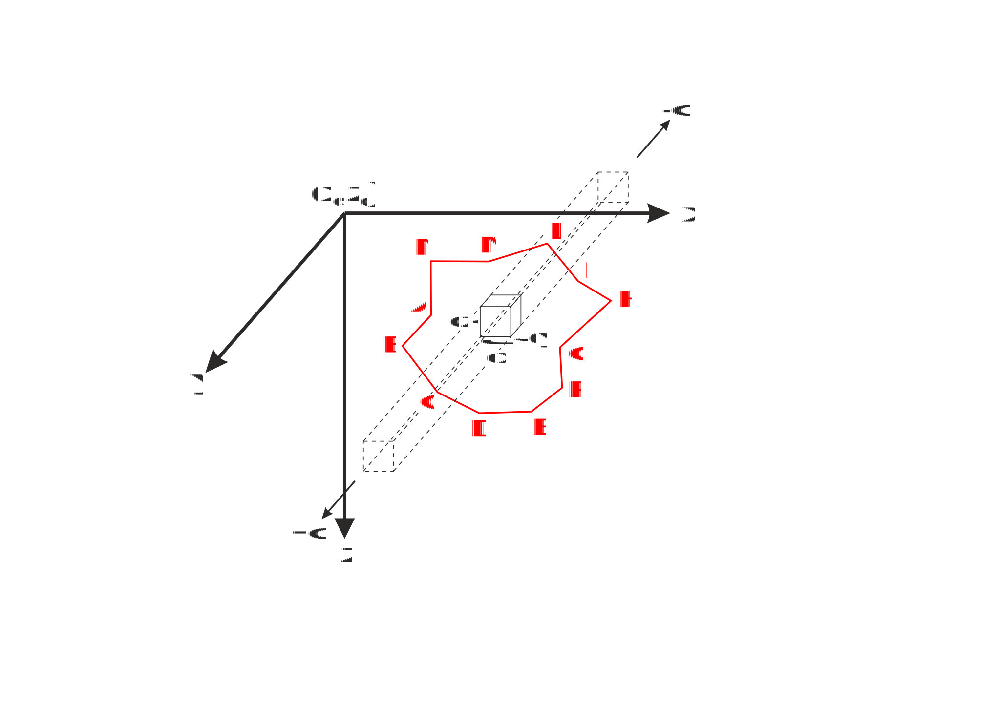

User guide¶
Theoretical Background¶
For a theoretical explanation, let us consider a three-dimensional non-magnetic space in which a body infinitely extended in the \(\mathbf{y}\) direction is immersed.
The common aim of all formulations is the calculation of the magnetic field of this body upon an observation point (\(\mathbf{x}_0\) , \(\mathbf{z}_0\)) located along a profile aligned to the \(\mathbf{x}\) direction (the positive \(\mathbf{z}\) axis is assumed pointing downward).
The starting assumption is that our body can be considered as discretized by an infinite number of uniformly-magnetized elementary volumes with infinitesimal dimensions \(\mathbf{dz}\), \(\mathbf{dy}\), \(\mathbf{dz}\).
Within this assumption, the magnetic field associated to the body can be mathematically expressed in terms of a line integral around its periphery, represented in two dimensions as its polygonal cross-section (in red).
Tutorial¶
First load the module and define some magnetization vectors,
import mag2dpoly as mag
# induced magnetization
Jind = mag.MagnetizVector(mod=4.9,Ideg=90.0,Ddeg=45.0)
# remanent magnetization
Jrem = mag.MagnetizVector(mod=3.1,Ideg=45.0,Ddeg=0.0)
and then define some observation points
# angle with the North axis
northxax = 90.0
# number of observation
Nobs = 101
xzobs = np.transpose(np.vstack(( np.linspace(0.0,100.0,Nobs), -1.0*np.ones(Nobs))))
Finally the general list of vertices of the poligonal bodies and the relative indices mapping each body to its vertices:
# vertices of the poligonal bodies
vertices = np.array([ [35.0, 50.0],
[65.0, 50.0],
[80.0, 35.0],
[65.0, 20.0],
[35.0, 20.0],
[20.0, 35.0] ])
# indices of vertices for the body
nbod = 1
bodyindices = np.empty(shape=(nbod,), dtype=np.object)
inds = range(6)
bodyindices[0] = np.array(inds)
# construct the poligonal body object
pbody = mag.MagPolyBodies2D(bodyindices,vertices)
At this point the total field can be computed. We select “talwani” as the forward type:
# type of forward algorithm
forwardtype = "talwani"
# compute total field
# make Jind and Jrem arrays of objects (as many as there are bodies)
Jindv = np.array([Jind]) # we have one single body in this case
Jremv = np.array([Jrem]) # we have one single body in this case
tmag = mag.tmagpolybodies2Dgen(xzobs,Jindv,Jremv,northxax,pbody,forwardtype)
Now we can plot the results:
# plot
import matplotlib.pyplot as plt
plt.figure()
plt.subplot(211)
plt.title("Magnetic anomaly")
plt.plot(xzobs[:,0],tmag,"o-")
plt.subplot(212)
plt.title("Polygonal body")
x = np.append(pbody.bo[0].ver1[:,0],pbody.bo[0].ver1[0,0])
y = np.append(pbody.bo[0].ver1[:,1],pbody.bo[0].ver1[0,1])
plt.plot(x,y,"o-")
plt.show()